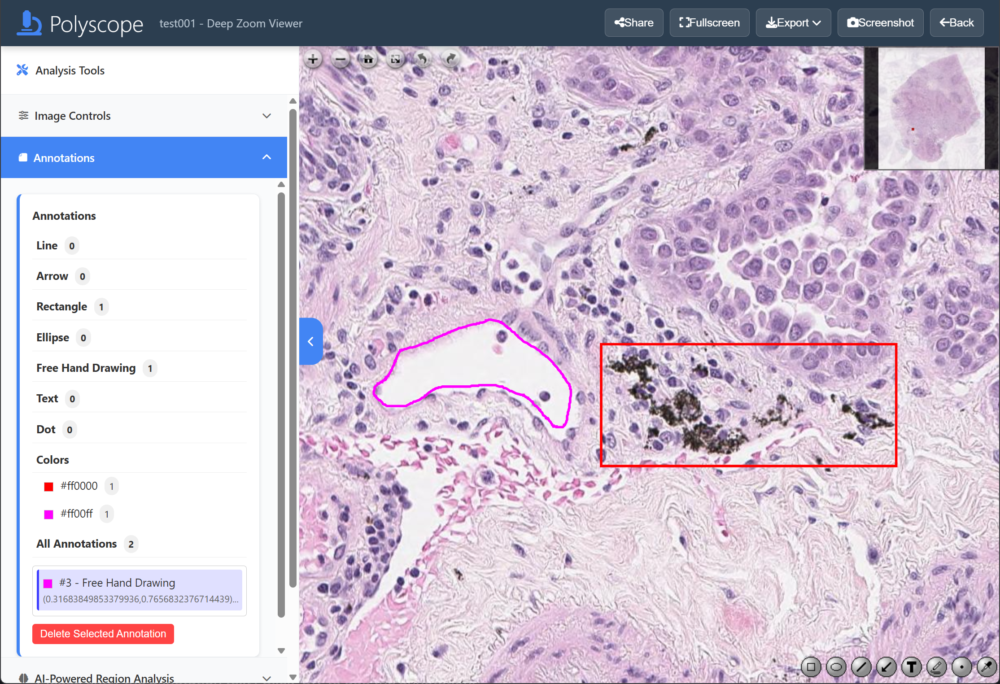

Pages > Image > Annotate Image
Abstract
Polyscope offers annotation on displayed images.
Overview
Click on the boxed regions in the screenshot below to learn more about each component:

Annotation Controls
On the lower right of the slide view, you will find the following annotation control buttons:
- Click and drag on the slide using left mouse button to add a rectangle annotation.
- Click and drag on the slide using left mouse button to add an ellipse annotation.
- Click
⟋and drag on the slide using left mouse button to add a line segment annotation. - Click and drag on the slide using left mouse button to add an arrow annotation from tail to head.
- Click to add a text annotation. In the popup window, type in the text after the prompt 'Please enter the annotation text'. Click 'OK' to add the annotation.
- Click and drag on the slide using left mouse button to draw a freehand annotation.
- Click
.and left click on the slide to add a point annotation. - Click and click on the popup color swatches to change the annotation color.
Note that once an annotation is created, it cannot be edited (shape or color) unless it is deleted and recreated.
Tip
Annotations are automatically saved and you can safely close the browser window whenever you want.
Delete Annotations
To delete an annotation, double click on it and click 'Yes' in the popup message box. Multiple annotations must be deleted one by one. For some annotation types such as points, it may be hard to double click on the annotation, so you can use the Annotations side panel to make selections before deletion.
Deletion cannot be undone by the user. However, deleted annotations are recorded and can be retrieved for later analysis if necessary.
Annotation Statistics
In the Annotations section of the Analysis Tools side panel, you can view a real-time summary of created annotations. The statistics include counts for each annotation types, and a separate counts for each color.
Click on the annotatio type and color counts will apply attribute filter to the annotations, and filtered annotations will be shown in the list below. Click on the annotation entry in the list will center the selected annotation in the current view. Click the Delete Selected Annotation button to delete selected annotation.
Known issue
If annotation still apears after deletion, refresh the image page.
Download Annotations
Annotations created in Polyscope can be exported to common formats such as CSV and JSON, as well as Polyscope TXT format. Click the Export button on the top right and select Annotations TXT menu option to download the annotations in Polyscope .txt format. Other formats follow similarly. Annotations can be downloaded at any time and multiple times if needed.
Important
Since the annotation file does not contain corresponding source image information, it is recommended to name the file properly with relevant information.
Annotation Format
TXT Annotation Format
We save the following properties of annotations, one row per annotations. The description of columns ordered from left to right are:
- Annotation state:
0= deleted,1= active. - Index: started from one, ordered by creation or deletion time.
- Shape type:
0= line segment,1= arrow,2= rectangle,3= ellipse,4= freehand,5= text,6= point. - Data, depending on the shape type:
- Line segment, arrow: a list of 2 (x, y) coordinates denoting start and end points, e.g.
[(0.1,0.2),(0.3,0.4)]. - Rectangle, ellipse: a list of 2 (x, y) coordinates denoting the top-left and bottom-right corners, e.g.
[(0.1,0.2),(0.3,0.4)]. - Freehand: a list of (x, y) coordinates of variable length, e.g.
[(0.1,0.2),(0.3,0.4),...]. - Text: a list of a (x, y) coordinate and text string, e.g.
[(0.1,0.2),'text']. - Point: a list of 2 (x, y) duplicated coordinates, marking the point location, e.g.
[(0.1,0.2),(0.1,0.2)]. - Note that coordinate values for both x and y axes are normalized to 0 to 1 according to the width of the slide.
- Color: in hex such as
#ffffff. - Created date and time: in the format of
d/m/yyyy/HH:mm:ssin local time zone.
CSV Annotation Format
CSV annotation file contains one annotation per row, with the following columns: ID, Type, TypeName, Color, Coordinates, Zoom, Date, Details. Fields follow similar defintion of the TXT format, with the following differences:
- TypeName: a string denoting the shape name.
- Details: a string contains simple properties of the annotation including width, height, and area in normalized units.
JSON Annotation Format
Polyscope uses GeoJSON schema for annotation export to a JSON file. JSON provides the most information rich way for saving annotations. In addition to annotation definitions, JSON format includes metadata such as export date, channel, annotation count. Many other software such as QuPath supports GeoJSON where you can import Polyscope created annotations.
Annotation File Examples
For example, different formats of the same rectangle annotation are shown below:
{
"type": "FeatureCollection",
"features": [
{
"type": "Feature",
"geometry": {
"type": "Polygon",
"coordinates": [
[
[0.1, 0.2],
[0.1, 0.4],
[0.3, 0.4],
[0.3, 0.2],
[0.1, 0.2]
]
]
},
"properties": {
"objectType": "annotation",
"classification": {
"name": "Rectangle",
"colorRGB": 16711680
},
"id": 1,
"polyscope_type": 2,
"zoom": 1,
"date": "",
"details": "Width: 0.20, Height: 0.20, Area: 0.04",
"active": true
}
}
]
}